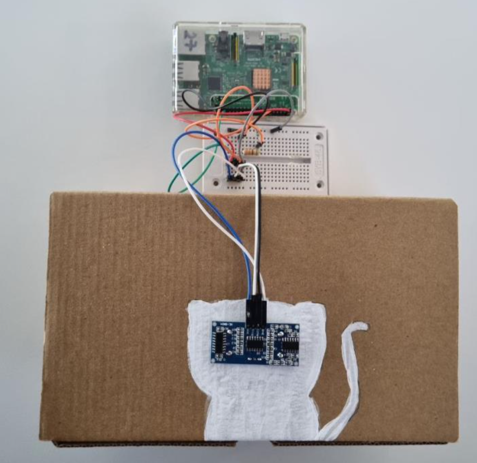
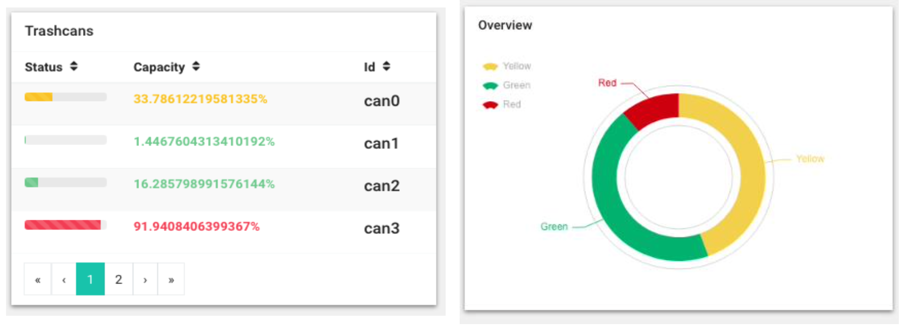
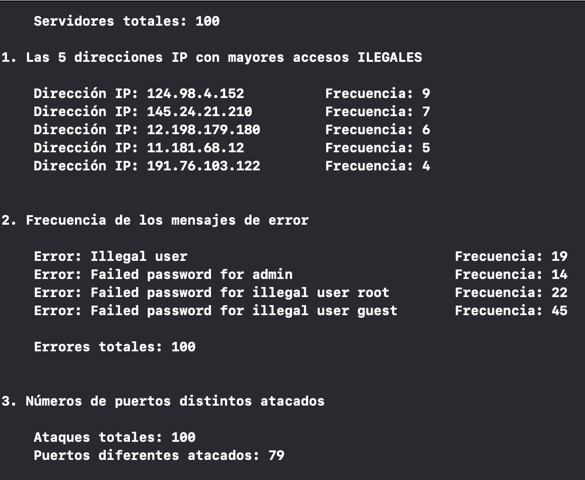
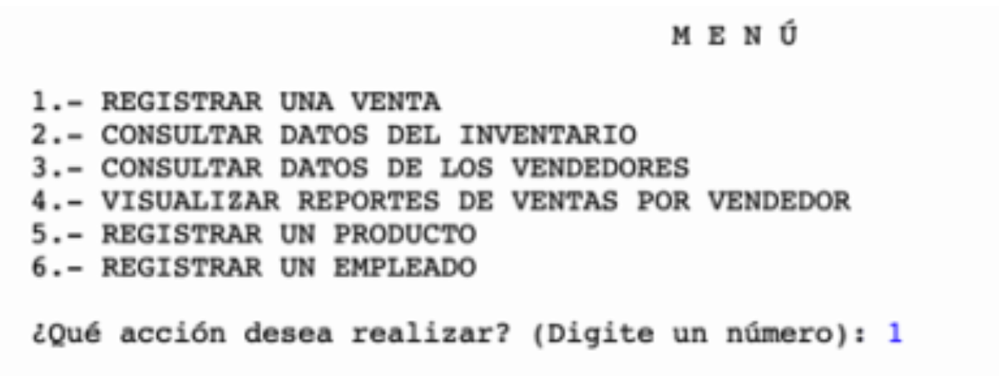
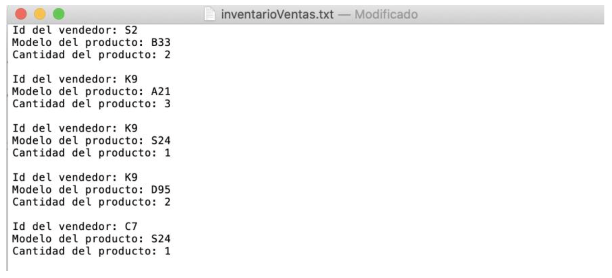

Educación
Lenguajes de
Programación
Python
80%
C++
90%
Mathlab
85%
HTML
75%
CSS
70%
R
70%
Portafolio
| Proyecto 1: Internet of Things |
|---|
| Fecha de Elaboración: Diciembre 2021 |
| En este proyecto se creó un basurero inteligente, el cual detectaba el porcentaje de capacidad que estaba lleno y mandaba su estado. La información se almacenaba en una BD. Por medio de un Dashboard, el cliente podía visualizar la ubicación y estatus del bote de basura. |
|
  |
| Proyecto 2: Estructuras de Datos |
|---|
| Fecha de Elaboración: Diciembre 2021 |
| Con apoyo de las estructuras de datos (Linked Lists, Graphs, Hash Tables) se creó un programa que permitía encontrar información referente a los ataques cibernéticos registrados en archivos de texto. |
|
 |
| Proyecto 3: Programación de Inventario |
|---|
| Fecha de Elaboración: Octubre 2020 |
| Se realizó la programación de un inventario para un establecimiento que vende productos. En dicho programa, se pueden registrar artículos, vendedores y ventas; además, se pueden consultar los datos del inventario, la información de los vendedores y los reportes de ventas por vendedor. |
|
  |
Hobbies y Gustos
- Jugar Fútbol
- Pasar tiempo con mis amigos
- Leer
- Ver Películas
- Escuchar Música
- Serie favorita: Friends
- Película favorita: Seven
- Libro favorito: Crónica de una muerte anunciada
- Videojuego favorito: Fifa